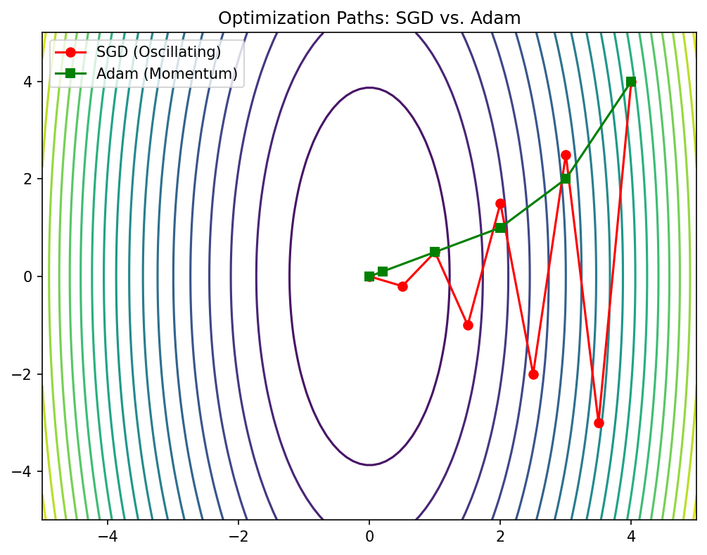
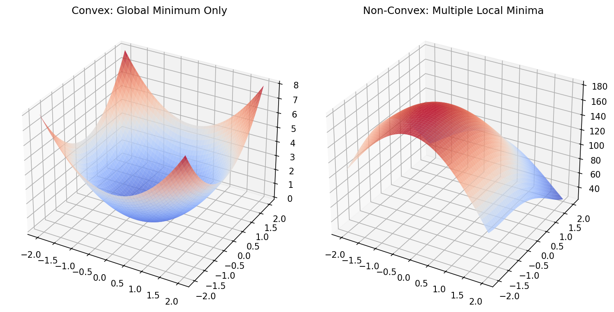

Mathematical Foundations of AI & ML
Unit 6: Loss Landscapes and Optimization Behavior
01. Title + Unit 6 positioning
- Unit 5 introduced backpropagation and gradient computation.
- Unit 6 asks: what does the surface look like that we are descending on?
- Understanding landscape geometry is essential for choosing optimizers and diagnosing training failures.
02. Recap: gradient descent as parameter update
- Core update rule: \(\boldsymbol{\theta}^{(t+1)} = \boldsymbol{\theta}^{(t)} - \eta \mathbf{g}^{(t)}\)
- The learning rate \(\eta\) controls step size.
- Convergence depends on landscape properties — not just the gradient direction (McClarren 2021).
03. Learning outcomes for Unit 6
By the end of this lecture, students can:
- interpret the Hessian matrix \(\mathbf{H}\) and its eigenvalues as curvature descriptors,
- explain why saddle points dominate over local minima in high dimensions,
- compare momentum, AdaGrad, RMSProp, and ADAM mechanistically,
- relate flat vs sharp minima to generalization performance.
04. The loss landscape metaphor
- The cost function \(J(\boldsymbol{\theta})\) defines a surface over the parameter space \(\mathbb{R}^p\).
- Peaks, valleys, saddle points, and plateaus characterize this topography.
- Training is a trajectory on this surface, guided by gradient information.
05. Visualizing 1D and 2D loss surfaces
- In 1D: loss curve with clear minima and maxima.
- In 2D: contour plots reveal elongated valleys and saddle structures.
- Real networks live in \(\mathbb{R}^{10^6}\) or higher — visualization is always a projection (Goodfellow, Bengio, and Courville 2016).
06. Critical points: gradient equals zero
- A critical point satisfies \(\mathbf{g} = \mathbf{0}\).
- Classification requires second-order information: the Hessian matrix \(\mathbf{H}\).
- Minimum, maximum, or saddle point depends on the sign pattern of \(\mathbf{H}\) eigenvalues.
07. The Hessian matrix: definition
- The Hessian \(\mathbf{H}\) is the matrix of second-order partial derivatives:
\[ H_{ij} = \frac{\partial^2 J}{\partial \theta_i \partial \theta_j} \]
- \(\mathbf{H}\) is symmetric for smooth loss functions (Schwarz’s theorem).
- Its eigenvalues and eigenvectors encode curvature magnitude and direction.
08. Eigenvalues of the Hessian
- Large eigenvalue: the loss changes rapidly along the corresponding eigenvector direction (steep curvature).
- Small eigenvalue: the loss is nearly flat along that direction.
- Negative eigenvalue: the critical point is a saddle point along that direction.
09. Conditioning and the condition number
Mathematical Definition
- The condition number is defined as \(\kappa(\mathbf{H}) = \lambda_{\max} / \lambda_{\min}\).
- \(\kappa \approx 1\): well-conditioned, isotropic curvature.
- \(\kappa \gg 1\): ill-conditioned curvature.
Geometric Intuition
- Well-conditioned: Level sets are nearly circular.
- Ill-conditioned: Level sets are elongated ellipses.
- Gradient descent oscillates in steep directions and crawls in flat ones.
10. Geometric interpretation: elliptical contours
- Well-conditioned: circular level sets — equal progress in all directions.
- Ill-conditioned: elongated ellipses — the optimal step size differs drastically by direction.
- Standard gradient descent cannot adapt to direction-dependent curvature.
11. Why local minima are rare in high dimensions
- For a critical point to be a local minimum, all \(\mathbf{H}\) eigenvalues must be positive.
- With \(p\) parameters, each eigenvalue is independently likely to be positive or negative.
- The probability of all-positive eigenvalues decreases exponentially with \(p\) (Goodfellow, Bengio, and Courville 2016).
12. Saddle points dominate the landscape
- In high dimensions, most critical points are saddle points, not minima.
- Random matrix theory predicts: the fraction of negative eigenvalues concentrates near 0.5 at high-loss critical points.
- Low-loss critical points tend to have mostly positive eigenvalues — the “good” minima region.
13. Saddle point dynamics under gradient descent
- Near a saddle point, the gradient \(\mathbf{g}\) is small in all directions — training slows dramatically.
- Escape is possible along negative-curvature directions, but can take many iterations.
- Gradient noise from mini-batches can help escape saddle points faster.
14. Plateaus and vanishing gradients
- Plateaus are extended flat regions where \(\|\mathbf{g}\| \approx 0\).
- Common with saturating activation functions (sigmoid, tanh) in deep networks.
- Training appears stuck — but the model has not converged to a useful solution.
15. Loss surface of linear networks
- Even linear networks \(f = W_L \cdots W_1 x\) have non-convex loss landscapes.
- Saddle points arise from the product structure of weight matrices.
- Analytical tractability makes them a useful theoretical testbed.
16. Empirical observations: loss surfaces of deep networks
- Many local minima exist, but they tend to have similar loss values.
- The loss at local minima decreases as network width increases.
- Sharp minima coexist with flat minima — optimizer choice determines which is found (Goodfellow, Bengio, and Courville 2016).
17. Role of overparameterization
- Networks with more parameters than training samples create degenerate solution manifolds.
- Connected low-loss valleys allow smooth interpolation between solutions.
- Overparameterization paradoxically helps optimization by removing barriers.
18. Symmetry and mode connectivity
- Permuting hidden units produces an equivalent network with identical loss.
- This creates combinatorially many equivalent minima in weight space.
- Recent work shows that minima found by different training runs can be connected by low-loss paths.
19. Landscape pathologies summary
- Ill-conditioning: oscillation + slow convergence; diagnosed by large \(\kappa(\mathbf{H})\).
- Saddle points: near-zero gradient \(\mathbf{g}\) in all directions; escape requires curvature exploitation.
- Plateaus: extended flat regions; caused by saturating activations.
- Sharp minima: low training loss but poor generalization; sensitive to perturbation.
20. Checkpoint: identify the pathology
- Scenario A: training loss oscillates wildly but does not decrease — ill-conditioning + learning rate too large.
- Scenario B: training loss flatlines at a high value — saddle point or plateau.
- Scenario C: training loss is very low but test loss is high — sharp minimum / overfitting.
21. Vanilla GD on ill-conditioned surface
- On an elongated bowl, GD zig-zags across the narrow direction.
- Progress along the long axis is extremely slow.
- The optimal learning rate is limited by the steepest direction: \(\eta < 2/\lambda_{\max}\).
22. Momentum: physics analogy
- Think of the parameter vector \(\boldsymbol{\theta}\) as a ball rolling on the loss surface.
- The ball accumulates velocity \(\mathbf{v}\) in directions of consistent gradient.
- Oscillations in steep directions are damped because velocity averages out sign changes (McClarren 2021).
23. Momentum update rule
- Velocity update: \(\mathbf{v}^{(t+1)} = \alpha \mathbf{v}^{(t)} - \eta \mathbf{g}^{(t)}\)
- Parameter update: \(\boldsymbol{\theta}^{(t+1)} = \boldsymbol{\theta}^{(t)} + \mathbf{v}^{(t+1)}\)
- Typical default: \(\alpha = 0.9\); controls how much history is retained.
24. Momentum on the elongated bowl
- Oscillations across the narrow direction cancel in the velocity average.
- Net velocity builds up along the valley floor.
- Convergence is dramatically faster compared to vanilla GD.
25. Nesterov accelerated gradient
- Key idea: evaluate the gradient at the look-ahead position \(\boldsymbol{\theta} + \alpha \mathbf{v}\).
- Provides a correction before committing to the full momentum step.
- Achieves provably better convergence rate \(O(1/t^2)\) vs \(O(1/t)\) for convex problems.
26. Momentum vs Nesterov: comparison
- Both reduce oscillations and accelerate convergence on ill-conditioned surfaces.
- Nesterov tends to overshoot less because of the look-ahead correction.
- In practice, the difference is modest for deep learning; both are widely used.
27. Learning rate as the most critical hyperparameter
- The learning rate \(\eta\) governs the fundamental speed–stability tradeoff.
- Too large: divergence or chaotic oscillation.
- Too small: convergence to nearest minimum, which may be suboptimal (Neuer et al. 2024).
28. Learning rate sensitivity demonstration
- Same model, same data, three learning rates: training curves diverge dramatically.
- Optimal \(\eta\) depends on curvature, batch size, and model architecture.
- This motivates adaptive methods that remove the need for manual tuning.
29. Why a single global learning rate is insufficient
- Different parameters experience different curvatures (different \(\mathbf{H}\) eigenvalues).
- A single \(\eta\) forces a compromise: too fast for some directions, too slow for others.
- Per-parameter adaptation is the natural solution.
30. Recap: what momentum solves and what it does not
- Momentum accelerates convergence along consistent gradient directions.
- It does not adapt the learning rate per parameter.
- Ill-conditioned landscapes still require direction-dependent step sizes.
31. Per-parameter learning rates: the core idea
- Scale each parameter’s update by the inverse of its historical gradient magnitude.
- Parameters with large gradients get smaller effective learning rates.
- Parameters with small gradients get larger effective learning rates.
32. AdaGrad: accumulate squared gradients
- Accumulator: \(\mathbf{G}_t = \mathbf{G}_{t-1} + \mathbf{g}_t^2\) (element-wise).
- Update: \(\boldsymbol{\theta}_{t+1} = \boldsymbol{\theta}_t - \frac{\eta}{\sqrt{\mathbf{G}_t} + \epsilon} \mathbf{g}_t\)
- Naturally adapts to sparse features — infrequent features get larger updates (Neuer et al. 2024).
33. AdaGrad: strengths and weaknesses
- Strength: excellent for sparse gradient problems (NLP, recommender systems).
- Weakness: \(\mathbf{G}_t\) only grows, so effective learning rate monotonically decreases.
- Eventually, the learning rate becomes too small and training stops prematurely.
34. RMSProp: exponential moving average fix
- Replace the sum with a decaying average: \(E[\mathbf{g}^2]_t = \gamma E[\mathbf{g}^2]_{t-1} + (1-\gamma)\mathbf{g}_t^2\).
- Prevents the aggressive accumulation that kills AdaGrad.
- Proposed by Hinton in a Coursera lecture — never formally published but universally used.
35. RMSProp update rule
- Update: \(\boldsymbol{\theta}_{t+1} = \boldsymbol{\theta}_t - \frac{\eta}{\sqrt{E[\mathbf{g}^2]_t} + \epsilon} \mathbf{g}_t\)
- Typical default: \(\gamma = 0.9\), \(\epsilon = 10^{-8}\).
- Effective learning rate adapts to recent curvature, not all-time history.
36. ADAM: combining momentum + adaptive scales
- First moment (mean of gradients): \(\mathbf{m}_t = \beta_1 \mathbf{m}_{t-1} + (1-\beta_1)\mathbf{g}_t\)
- Second moment (mean of squared gradients): \(\mathbf{v}_t = \beta_2 \mathbf{v}_{t-1} + (1-\beta_2)\mathbf{g}_t^2\)
- ADAM combines directional memory (momentum) with magnitude adaptation (RMSProp) (Neuer et al. 2024).
37. ADAM update rule (full derivation)
- Bias correction: \(\hat{\mathbf{m}}_t = \frac{\mathbf{m}_t}{1-\beta_1^t}, \quad \hat{\mathbf{v}}_t = \frac{\mathbf{v}_t}{1-\beta_2^t}\)
- Parameter update:
\[ \boldsymbol{\theta}_{t+1} = \boldsymbol{\theta}_t - \frac{\eta}{\sqrt{\hat{\mathbf{v}}_t} + \epsilon}\,\hat{\mathbf{m}}_t \]
- Defaults: \(\beta_1=0.9\), \(\beta_2=0.999\), \(\epsilon=10^{-8}\), \(\eta=10^{-3}\).
38. ADAM as landscape normalizer
- ADAM effectively rescales coordinates to equalize curvature across parameter directions.
- In well-conditioned subspace: ADAM behaves like momentum SGD.
- In ill-conditioned subspace: ADAM compensates by scaling down steep directions and scaling up flat ones.
39. ADAM variants: AdamW, AMSGrad
- AdamW: decouples weight decay from the adaptive gradient scaling — better regularization behavior.
- AMSGrad: ensures the second moment estimate never decreases — addresses rare convergence failures.
- AdamW is now the recommended default in most deep learning frameworks.
40. Optimizer comparison on benchmark surfaces
- SGD: slow on ill-conditioned surfaces, but can find flatter minima.
- SGD + momentum: faster convergence, reduced oscillation.
- ADAM: fast initial progress, robust to hyperparameter choices, but may converge to sharper minima.
graph TD
GD[Gradient Descent] --> M[Momentum]
GD --> AG[AdaGrad]
M --> NAG[Nesterov Accelerated Gradient]
AG --> RMS[RMSProp]
RMS --> ADAM[ADAM]
M --> ADAM
ADAM --> AW[AdamW]41. When ADAM is not enough
- ADAM can converge to sharper minima than SGD with momentum.
- Generalization gap: ADAM training loss is lower, but test loss can be higher.
- Recent practice: use ADAM for warm-up, switch to SGD + momentum for fine-tuning.

42. Practical optimizer selection guide
- Default starting point: AdamW with \(\eta = 10^{-3}\) and default betas.
- For best generalization: SGD + momentum with tuned learning rate schedule.
- For sparse or NLP tasks: ADAM or AdaGrad variants.
- Always validate optimizer choice on a held-out set.
[INSERT: Selection flowchart or table tailored to materials science models (GNNs vs. simple MLPs).]
43. Flat vs sharp minima
- A flat minimum: the loss remains low over a wide neighborhood of the solution.
- A sharp minimum: the loss increases rapidly with small parameter perturbations.
- Flatness can be quantified by the trace or top eigenvalues of the Hessian \(\mathbf{H}\) at the minimum.

44. Connection to generalization
- Flat minima are less sensitive to the gap between training and test distributions.
- Sharp minima memorize training data specifics — poor transfer to unseen data.
- This connects landscape geometry to the bias-variance tradeoff of Unit 7 (Goodfellow, Bengio, and Courville 2016).
45. Learning rate schedules
- Step decay: reduce \(\eta\) by a factor at fixed epochs.
- Exponential decay: \(\eta_t = \eta_0 \cdot \gamma^t\).
- Cosine annealing: \(\eta_t = \frac{\eta_0}{2}(1 + \cos(\pi t / T))\) — smooth, widely used.
- Warm-up: start with small \(\eta\), ramp up linearly, then decay.
46. Batch size and gradient noise
- Small batch size \(\Rightarrow\) noisy gradient estimate \(\Rightarrow\) implicit regularization.
- Large batch size \(\Rightarrow\) accurate gradient \(\Rightarrow\) faster per-step but may converge to sharper minima.
- Gradient noise helps escape saddle points and sharp minima (McClarren 2021).
47. The learning rate–batch size relationship
- The linear scaling rule: when doubling batch size, double the learning rate.
- Effective learning rate: \(\eta_{\text{eff}} = \eta / B\) where \(B\) is batch size.
- This relationship breaks down at very large batch sizes — diminishing returns.
48. Exercise setup: optimizer comparison on 2D surfaces
- Implement vanilla GD, momentum, and ADAM in NumPy on a 2D quadratic.
- Visualize parameter trajectories overlaid on loss contours.
- Vary the condition number and observe how each optimizer responds.
- Experiment with learning rate schedules (constant vs cosine annealing).
49. Exam-aligned summary: 10 must-know statements
- The \(\mathbf{H}\) eigenvalues determine curvature magnitude in each direction.
- The condition number \(\kappa(\mathbf{H}) = \lambda_{\max}/\lambda_{\min}\) measures landscape difficulty.
- Saddle points vastly outnumber local minima in high-dimensional spaces.
- Momentum accumulates velocity \(\mathbf{v}\) to dampen oscillations and accelerate convergence.
- AdaGrad adapts per-parameter learning rates but decays too aggressively.
- RMSProp uses exponential moving averages to fix AdaGrad’s decay problem.
- ADAM combines momentum with adaptive per-parameter scaling.
- Flat minima correlate with better generalization; sharp minima tend to overfit.
- Learning rate schedules (warm-up + decay) improve both convergence and final performance.
- Smaller batch sizes provide implicit regularization through gradient noise.
50. References + reading assignment for next unit
- Required reading before Unit 7:
- Neuer: Ch. 4.5.5 (optimization variants)
- McClarren: Ch. 5.2.2 and Ch. 5.4 (regularization and dropout)
- Optional depth:
- Goodfellow et al.: Ch. 8.1–8.5 (optimization for deep learning)
- Bishop: Ch. 3.4 (Hessian and Laplace approximation)
- Next unit: Generalization, Bias-Variance Tradeoff, and Regularization.
Goodfellow, Ian, Yoshua Bengio, and Aaron Courville. 2016. Deep Learning. MIT Press.
McClarren, Ryan G. 2021. Machine Learning for Engineers: Using Data to Solve Problems for Physical Systems. Springer.
Neuer, Michael et al. 2024. Machine Learning for Engineers: Introduction to Physics-Informed, Explainable Learning Methods for AI in Engineering Applications. Springer Nature.